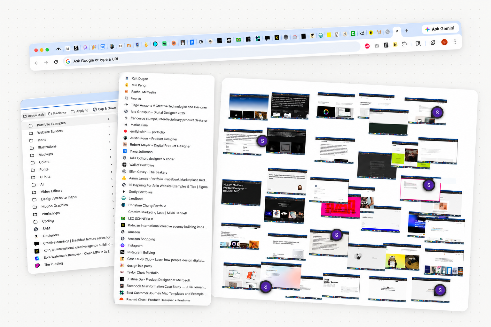

Decision 1
Work directly on the live page.
Attach and manipulate notes in place, keeping the element and the response visible together.
Notate · Product Design · Concept · 2025
Notes attached to the live web.
Right where your thinking happens.
01 / Overview
Notate is a Chrome extension for annotating the live web. Attach notes to elements on a page, organize them into folders, and return to what you saved—right where you found it.
I designed and built the extension from end to end. It’s fully functional and being prepared for release on the Chrome Web Store.
Chrome Web Store · publishing soon02 / Problem
Open tabs, bookmarks, and screenshots can hold onto a reference. But the detail that caught your eye—and what you wanted to say about it—can get lost along the way.

Keeping a page open becomes a way to remember to come back.
A saved link doesn’t capture which part mattered or why.
The visual survives, but its connection to the live source gets weaker.
03 / Solution
A focused workflow that keeps the reference, the note, and the way back together.
Select an element on a live webpage and attach a note directly to it.
Save notes into folders to keep references grouped by project or purpose.
Reopen a saved page and jump back to the note in its original context.
04 / Design decisions
Three choices shape how notes connect to the page, stay organized, and remain easy to revisit.
Attach and manipulate notes in place, keeping the element and the response visible together.
Folders group notes by project or purpose, giving saved references a structure beyond individual pages.
A dropdown preview provides a quick look at saved content before returning to the page.
05 / Reflection
Building and using Notate shifted my focus from individual interactions to what the product needed to do well. Each feature meant deciding whether it supported the core workflow or simply added complexity.
Keeping that scope focused helped me turn a personal workflow into a fully functional extension, ready to share with others.